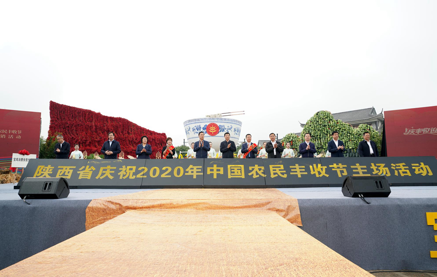
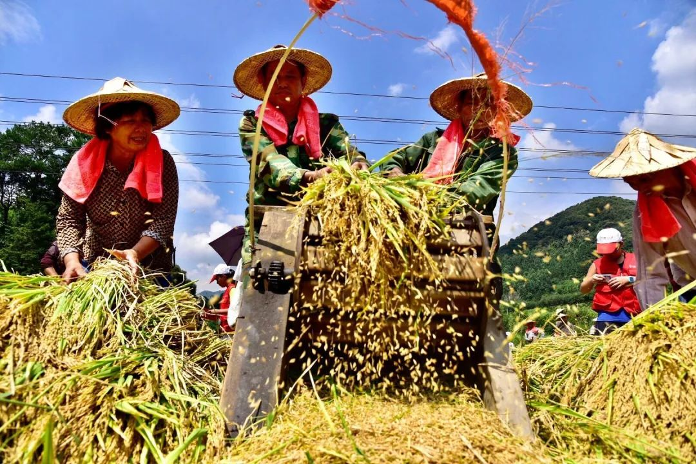

陕西省庆祝2020年中国农民丰收节暨特色农产品展销会启动
 又是一岁秋分至，又是一年丰收时，在这硕果累累、瓜果飘香的金秋时节，陕西省庆祝2020年中国农民丰收节暨特色农产品展销会在宝鸡市启动。 省政府副省长魏增军，副省长、宝鸡市委书记徐启方，中国农产品市场协会会长、国务院参事室特约研究员、原农业部党组成员张玉香，中国农村合作经济管理学会理事长、原农业部党组成员毕美家，省政府副秘书长魏稳柱，省委农办主任、省农业农村厅厅长黄思光，宝鸡市市长惠进才等领导参加启动仪式。 与会领导与现场农民朋友共同收听收看了习近平总书记在今年中国农民丰收节到来之际，对全国广大农民和“三农”工作者的祝贺慰问。总书记的祝贺和慰问，让启动仪式的现场洋溢着激动和幸福，让大家倍感振奋、催人奋进。 魏增军等与会领导与特邀杰出农民代表共同启动活动，徐启方、张玉香为宝鸡消费扶贫生活馆揭牌，毕美家、黄思光、惠进才分别讲话和致辞，魏稳柱主持启动仪式。 陕西省庆祝2020年中国农民丰收节主场活动以“庆丰收、迎小康”为主题，9月22—30日，同步举行第九届中国猕猴桃产业发展大会、2020年中国好苹果大赛、陕西特色农产品展销会、现代农业新技术新品种新机具展、“3+X”特色产业推介、陕西农耕文化文艺展演、“乡村记忆·小康家园”摄影书画展等10余项活动，集中展示全省脱贫攻坚的巨大成就、乡村振兴的光明前景和农耕文明传承的无限活力。 陕西省特色农产品展销会以“荟萃三秦名品，助力脱贫攻坚”为主题，由陕西特色农产品展区、陕西茶叶展区和金秋菊花展区组成。共邀请全省12个市（区）及省供销集团、省果业集团、省农垦集团等共有60家企业参展。组织苹果、猕猴桃、羊乳、核桃、花椒、食用菌、中药材、粮食、油料等20大类110多个产品参展，其中扶贫产品占比80%以上。